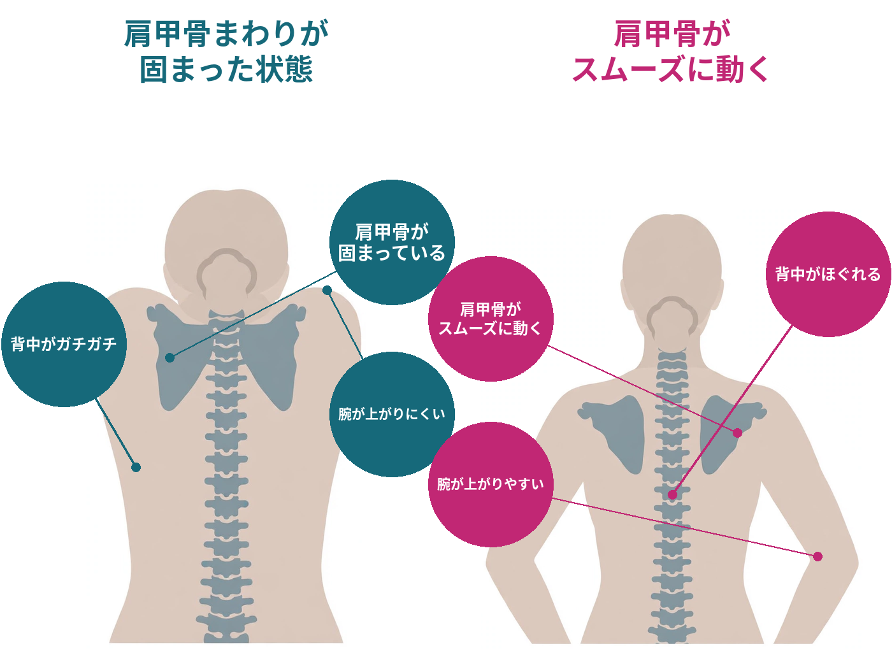

肩甲骨のガチガチ
美容整体ステラ・ポラリス東三国｜大阪市淀川区東三国・東三国駅徒歩5分・女性向け

肩甲骨まわりをゆるめて、後ろ姿の印象を整える
肩甲骨は背中の上部にある大きな骨で、本来は肋骨の上を滑るように大きく動きます。ところが、デスクワークや前かがみの姿勢が続くと、肩甲骨まわりの筋肉がこわばって動きが小さくなり、「ガチガチ」に固まったように感じやすくなります。肩甲骨の動きが鈍ると、腕の上げ下げが重く感じたり、背中の張りや姿勢の丸まりにつながったりします。このページでは、肩甲骨が固まる仕組みと、肩甲骨が動きやすい状態を目指す当サロンでのケア、ご自宅でできるセルフケアをご案内します。まずは下のチェックで、ご自身の状態を確かめてみてください。
ご予約はこちら（Coubic）こんなお悩みありませんか
- 背中に手が回りにくく、ブラジャーのホックを留めるのがつらい
- 腕を真上に上げると、肩や背中がつっぱる感じがする
- 背中の上部がいつも張っていて、重だるく感じる
- 写真に写った後ろ姿を見て、背中の丸さや盛り上がりが気になった
- デスクワークのあと、肩甲骨の内側が痛いように感じる
- 深呼吸をしても、背中が広がりにくい感じがする
- 肩甲骨を寄せる動きをしようとしても、うまく動いている感じがしない
当てはまる項目が多いほど、肩甲骨まわりの筋肉がこわばり、動きが小さくなっている目安とされています。背中は自分では見えず、手も届きにくい場所だからこそ、固まりに気づきにくい部位です。次のセルフチェックで、肩甲骨の動きの傾向を確かめてみましょう。
簡単セルフチェック（腕回しチェック）
立ったままできる、肩甲骨の動きの傾向を知るための簡単な方法です。
- まっすぐ立ち、両腕を肩の高さで前へ伸ばします。
- そのまま両腕で大きな円を描くように、ゆっくり後ろへ回します。
- 途中で引っかかる感じがある、左右で回しやすさが違う、背中が一緒に丸まってしまう場合は、肩甲骨まわりの動きが小さくなっている目安と言われています。
※これは診断ではありません。ご自身の状態の傾向を知る目安としてお使いください。
肩甲骨のガチガチの原因と仕組み
肩甲骨本来の動き
肩甲骨は、腕を上げる・回す・背中に手を回すといった動きに連動して、肋骨の上を滑るように動く骨です。寄せる・開く・上げる・下げる・回すといった多彩な動きができるからこそ、腕は広い範囲に動かせます。ところが、肩甲骨まわりの筋肉がこわばると、この滑る動きそのものが小さくなり、腕の動きも背中の感覚も重くなりがちです。図1のように、肩甲骨の固さは背中だけでなく、腕や姿勢全体の見え方にもつながっていきます。

図1 肩甲骨が固まった姿勢で起こりやすい変化と、肩甲骨が動きやすい姿勢のイメージ。姿勢の状態には個人差があります。
前かがみ姿勢と筋肉のこわばり
パソコン作業やスマートフォンの使用で前かがみの姿勢が続くと、肩甲骨は外側に開いた位置で固定されやすくなります。肩甲骨の内側の筋肉は引き伸ばされたまま働き続け、首から肩にかけての筋肉は縮んだままこわばるため、背中の上部全体がガチガチに感じやすくなると言われています。
腕や脇まわりとの連動
肩甲骨は、腕の付け根や脇の下の筋肉とも連動しています。脇まわりが固いと肩甲骨の下側の動きが制限され、腕を上げるときに肩だけで頑張る動きになりやすいとされています。肩甲骨のケアを考えるときは、背中の中心だけでなく、腕の付け根や脇まわりまで含めてゆるめることが大切です。
後ろ姿の印象への影響
肩甲骨が開いたまま固まると、背中が丸く盛り上がって見え、後ろ姿の印象が重く見えがちです。反対に、肩甲骨が寄って背筋が伸びた姿勢では、背中のラインがすっきり見え、首も長く見える効果が感じられます。姿勢の土台である肩甲骨の動きは、見た目の印象にも関わっています。
セルフケアで足りる場合・サロンケアが向く場合
張りが軽く、腕回しやストレッチをしたあとに背中が軽く感じる日が多い場合は、まずご自宅でのセルフケアを続けて様子を見る方法があります。一方で、背中は自分では手が届かずほぐしにくい、肩甲骨の内側の固さが自分ではゆるめられない、後ろ姿の印象もあわせて整えたいという場合は、サロンでのケアが向いている目安になります。サロンでは、背中全体を大きくゆるめて肩甲骨の動きを引き出すことで、施術後に「背中が広がった」「腕が上げやすい」と感じやすい状態を目指します。どちらが正解というものではなく、今の状態に合わせて選ぶことが大切です。
当サロンでのケア
当サロンの肩甲骨ケアは、「肩甲骨が本来の動きを取り戻しやすい状態」を目指す組み立てです。背中全体の状態を確認し、部位と目的に合わせて3つの手技を組み合わせます。
美容整体：肩甲骨の位置と背骨のラインを整え、背筋が伸びた姿勢の土台をつくることを目的に。肩甲骨が寄りやすい状態を目指して進めます。
アロマオイルマッサージ：背中全体をオイルで大きく流すようにゆるめ、背中の張りがやわらぎやすい状態を目指します。香りに包まれながらほぐれる、リラックス感の高いケアです。
もみほぐし：肩甲骨の内側・外側に指が届くような感覚で、固まった筋肉を丁寧にほぐし、肩甲骨の動きを引き出すことを目的に進めます。腕の付け根や脇まわりもあわせてケアします。
ケアを通して目指すのは、こんな変化です。
- 背中が広がって、後ろ姿がすっきり見える姿勢へ
- 肩甲骨が動きやすくなり、腕が上げやすい感覚へ
- 背中の張りがゆるんで、デスクワーク後の重だるさを感じにくい状態へ
- 深呼吸で背中が広がるような、呼吸のしやすさへ
- 首・肩の土台が整って、肩まわりの負担も軽く感じられる状態へ
ご自身では手の届きにくい背中こそ、プロの手で丁寧にほぐす時間を大切にしています。施術の前後で腕の上げやすさを一緒に確認し、「背中が広がった」「腕が軽く上がる」といった感覚の違いを確かめます。

施術の流れ
ご来店後、気になる部位やお悩み、ご希望の強さなどをうかがいます。完全個室のため、周りを気にせずお話しいただけます。
肩甲骨の動きや腕の上げやすさ、背中の張りの状態などを一緒に確認し、その日の状態に合わせた施術の進め方をご案内します。
美容整体を中心に、ご希望に応じてアロマオイルマッサージ、もみほぐしを組み合わせて進めます。強さは途中でも調整できます。
施術後の状態を確認し、ご自宅で続けやすいセルフケアのポイントをお伝えします。次回の目安についても、ご希望があればご案内します。
料金
| コース | 通常価格 | キャンペーン価格（12/25まで） |
|---|---|---|
| 80分 | ― | 3,000円 |
| 100分 | 10,000円 | 4,000円 |
| 120分 | ― | 5,000円 |
クリスマスキャンペーンは12月25日まで、ご新規様もリピーターの方も対象です。施術内容は当日の状態とご希望に合わせて組み立てます。
ご自宅でできるセルフケア
- 肩甲骨寄せ：椅子に座り、両肘を後ろに引いて肩甲骨同士を寄せるように意識します。ゆっくり10回を2セット、デスクワークの合間に取り入れるのが目安です。
- タオルストレッチ：タオルの両端を持って頭の上へ上げ、ゆっくり後ろへ倒します。左右の肩甲骨が寄る感覚を意識しながら、5回ほど繰り返すのが目安です。痛みのない範囲で行ってください。
- 腕回し：両腕で大きな円を描くように前回し・後ろ回しを各10回。お風呂上がりなど体が温まった時間に行うと、背中が動きやすく感じられます。
- 背中を温める：蒸しタオルや入浴で背中全体を温めると、筋肉がゆるみやすい状態になります。ストレッチの前に取り入れるのがおすすめです。
ご自宅でのケアに：セルフケア資料ライブラリ（無料）
このお悩みに合わせたセルフケアの考え方を、無料の資料ライブラリでご紹介しています。
セルフケア資料ライブラリを開く →
受診の目安
肩の痛みで腕が上がらない、夜間にうずくような痛みがある場合は、施術の前に医療機関への受診をおすすめします。また、腕や手のしびれを伴う場合や、転倒などのあとに痛みが出た場合も、まずは医療機関でご相談ください。
よくある質問
Q. 初めてでも大丈夫ですか？
はい。当サロンは完全予約制・完全個室で、1日3組までのご案内です。最初にカウンセリングで気になる部位や背中の状態をうかがい、無理のない内容から始めます。施術の前後で腕の上げやすさを確認しながら「背中が広がった」「腕が軽く上がる」といった感覚の違いを一緒に確かめますので、初めての方も安心してご利用いただけます。
Q. 施術は痛いですか？
強さは、ご希望をうかがいながら調整します。固まった部位ほど最初は強く感じることがありますが、強く押せばよいという考え方ではなく、お身体の状態に合わせた圧で、背中の筋肉がゆるんでいく感覚を味わいながら受けていただけます。感じ方には個人差がありますので、施術中も遠慮なくお声がけください。
Q. コースはどう選べばいいですか？
80分・100分・120分のコースがあり、ケアしたい部位の広さやお時間のご都合に合わせて選べます。肩甲骨のケアで背中全体から首・肩、腕の付け根までゆっくり整えたい方には、100分が選ばれることが多いコースです。迷われる場合は、ご予約の際にお気軽にご相談ください。
Q. 場所と予約方法を教えてください。
大阪市淀川区東三国、東三国駅から徒歩5分です。完全予約制のため、予約サイト（Coubic）またはLINE公式アカウントからご予約をお願いしています。
Q. 男性も受けられますか？
当サロンは女性向けのため、男性の方は、同じ東三国の男性専用整体院「北辰堂」をご案内しています。
施術者について
平賀建人（施術歴30年）
鍼灸師・登録販売者・アロマセラピスト・パーソナルトレーナーの資格を持ち、美容整体を中心に、アロマオイルマッサージ、もみほぐしを、その日の状態とご希望に合わせて組み合わせて施術します。このページの内容は、施術者の知識と経験をもとに作成しています。

料金・ご予約
ご新規様もリピーターの方も 12/25まで
80分 3,000円／100分 4,000円／120分 5,000円
通常価格は100分10,000円です。施術内容はご希望に合わせて組み立てます。
営業時間：月〜土 17:00〜23:00／日 10:00〜23:00（完全予約制）｜電話：080-2468-3086
大阪府大阪市淀川区東三国2丁目25番4号101（東三国駅徒歩5分）